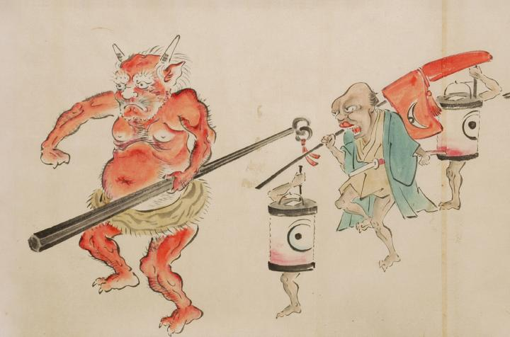

花嫁行列の先頭。先導役は虎の腰巻をはき金棒を持った鬼。角が2本生え、巨大な体躯の肌は赤色である。その後には供槍が続く。槍に掛けられた覆いには目が描かれ、これも化物であることがわかる。供槍の前後には、提灯に1本ずつ手足が生え、一つ目がついた化物が付き従っている。
出典：親書誌：U426_nichibunken_0053：化物婚礼絵巻；バケモノコンレイエマキ／日付：2006／資源識別子：U426_nichibunken_0053_0015_0000
Copyright (c)2010- International Research Center for Japanese Studies, Kyoto, Japan. All rights reserved.